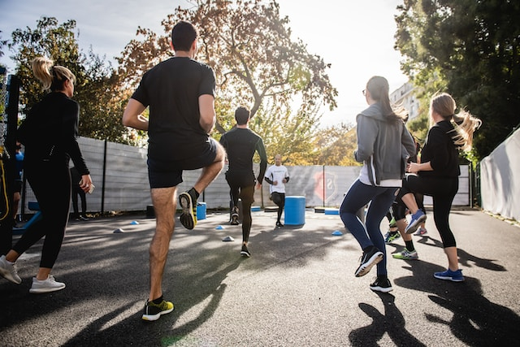

Nossos produtos
A busca por uma vida saudável e equilibrada é uma preocupação cada vez mais presente na sociedade moderna. Nesse contexto, os exercícios físicos desempenham um papel fundamental para a promoção da qualidade de vida. Os benefícios de uma rotina regular de exercícios vão muito além da aparência física. Além de ajudarem a controlar o peso e a melhorar a composição corporal, os exercícios contribuem para o fortalecimento dos músculos, ossos e articulações, proporcionando maior resistência e flexibilidade.
Outro ponto relevante é o fortalecimento do sistema imunológico. Os exercícios físicos regulares estimulam a produção de células de defesa, fortalecendo o organismo e reduzindo o risco de doenças. Além disso, eles ajudam a melhorar a circulação sanguínea, o que contribui para a prevenção de problemas cardíacos e outras doenças crônicas. Além dos benefícios físicos e mentais, a prática de exercícios também pode ser uma oportunidade para socialização e integração com outras pessoas. A participação em atividades em grupo, como aulas de dança, esportes coletivos ou caminhadas em grupo, pode ser uma ótima maneira de conhecer novas pessoas, estabelecer vínculos sociais e construir amizades.
Corrida
A corrida é uma atividade física completa e acessível, trazendo inúmeros benefícios para o corpo e a mente. Ela melhora o condicionamento cardiovascular, fortalece os músculos e queima calorias, auxiliando na perda de peso e na tonificação do corpo. Além disso, a corrida é uma excelente aliada na redução do estresse, melhora do humor e aumento da sensação de bem-estar, devido à liberação de endorfinas durante o exercício. Praticar corrida regularmente pode transformar sua saúde e proporcionar uma vida mais ativa e energética.
Musuculação
A musculação é uma atividade física que traz uma série de benefícios para o corpo e a saúde. Ao praticar musculação regularmente, é possível aumentar a força muscular, melhorar a resistência e a flexibilidade, além de contribuir para a melhoria da postura e prevenção de lesões. Além disso, a musculação também promove o aumento da massa muscular, o que ajuda a acelerar o metabolismo e favorece a queima de gordura, auxiliando no controle do peso. Além dos benefícios físicos, a musculação também tem impacto positivo na saúde mental, ajudando a reduzir o estresse, melhorar a autoestima e promover uma sensação de bem-estar geral. Praticar musculação de forma adequada e orientada por profissionais qualificados pode trazer resultados significativos para a qualidade de vida.

Alongamento/Mobilidade
O alongamento e a melhoria da mobilidade são essenciais para manter o corpo saudável e funcional. Ao realizar alongamentos regularmente, é possível aumentar a flexibilidade muscular, o que facilita os movimentos do dia a dia e previne lesões. Além disso, o alongamento ajuda a melhorar a postura, aliviar tensões musculares e reduzir dores crônicas. A melhoria da mobilidade articular proporcionada pelo alongamento também permite uma maior amplitude de movimento, o que é especialmente importante para atletas e pessoas que praticam atividades físicas intensas. Investir em alongamento e mobilidade é investir na qualidade de vida e no bem-estar do corpo e da mente.